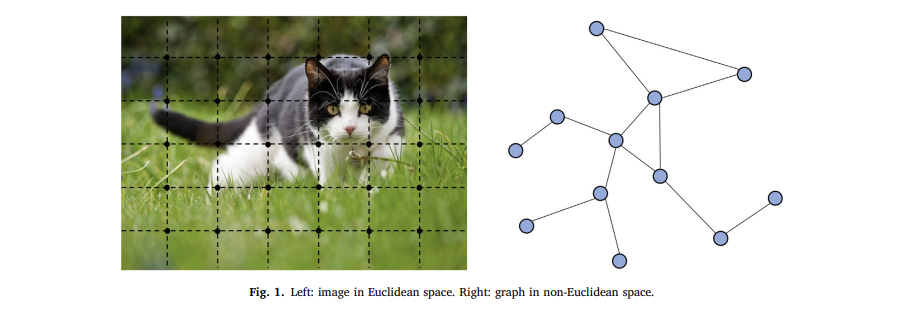

INTRO
그래프는 객체(노드)의 집합과 그들의 관계(에지)를 나타내는 데이터 구조이다. 그래프를 통해 다양한 분야에 걸쳐 수많은 시스템을 표현할 수 있다. 예를 들어, 소셜 네트워크, 자연과학, 지식그래프, 조합적 최적화 등이 있다.
이러한 강력한 표현력 덕분에 머신러닝으로 그래프를 분석하는 연구가 최근에 더욱 주목받고 있다. 머신러닝에서 다루는 유일한 비유클리드 데이터 구조인 그래프는 노드분류, 링크예측, 클러스터링을 하는데 주로 사용된다.
그래프 신경망(GNN, Graph Neural Network)은 그래프에서 연산을 하는 딥러닝방법을 말한다. 믿을만한 성능과 높은 해석력으로 최근 널리 사용되는 그래프 분석 방법이다.
1. GNN
1.1 MOTIVATION
1.1.1 합성곱 신경망
합성곱 신경망1이 GNN의 계기가 됐다. CNN은 여러 단계의 지역화된 공간 특징을 추출하고 재구성해 표현력이 높다.
생각해보면 그래프에서 잘 사용될 수 있는 기술들이 이미 CNN에 있다. 예를들면 다음과 같다.
- 지역연결 : 그래프는 일반적으로 가까운 것들이 연결되어 있는 구조이다.
- 가중치 공유 : 가중치를 공유하는 개념은 기존 그래프 이론2에 비해 계산 비용을 줄일 수 있다.
- 다중 계층 사용 : 다중 계층 구조는 다양한 크기의 특징을 갖는 패턴을 다루는 핵심 기술이다.
하지만 CNN은 이미지(2d-grid), 텍스트(1d-array) 등 일반적인 유클리드 데이터에서만 작동할 수 있다. 이 구조들도 그래프의 일부로 볼 수 있기 때문에 CNN을 확장해 그래프에 적용한다는 생각을 할 수 도 있다.
하지만 아래 그림에서 볼 수 있듯이 합성곱 필터와 풀링 작업을 정의하기 어려워서 CNN을 유클리드 영역에서 비유클리드 영역으로 확장하기는 힘들다.

1.1.2. 네트워크 임베딩
그래프의 노드, 에지, 부분 그래프를 낮은 차원의 벡터로 표현하는 그래프 임베딩(graph embedding)3도 GNN의 계기가 됐다.
전통적인 머신러닝 그래프를 분석할 때는 주로 사람이 직접 특징을 설계했기 때문에 유연하지 못했고 비용이 많이 들었다.
표현학습(representation learning)의 아이디어와 워드 임베딩(word embedding)의 성공에 영향을 받은 첫번째 그래프 임베딩 방법인 DeepWalk 는 랜덤 워크를 생성하고, 스킵그램모델(SkipGram model)을 학습해 그래프의 노드를 벡터로 바꾼다.
비슷한 접근 방법으로 나온 node2vec, LINE, TADW도 좋은 성과를 보였다. 하지만 이 방법은 두 가지 심각한 결점이 있다.
- 노드를 인코딩할 때 파라미터를 공유하지 않는다. \(\to\) 노드가 증가할 수록 그에 비례하여 파라미터 수도 증가. (계산 비효율적)
- 위 임베딩 방법들은 변하는 그래프나 새로운 그래프를 다룰 수 없음 \(\to\) 확장성 부족.
1.2 관련연구
GNN과 관련된 리뷰논문이 여러가지 있다. 그 중 몇가지를 소개한다.
1.3 기본 그래프 신경망
GNN의 개념은 고리 외8, 스카셀리 외9가 제안했다.
그래프에서 노드 \(v\)는 특징과 관련된 노드로 자연스럽게 정의된다. GNN의 최종목표는 각 노드의 상태 임베딩(state embeddin) \({\bf h}_v \in \mathbb{R}^s\)를 학습하는 것이다.
상태 임베딩 \({\bf h}_v\)는 해당노드와 주변 노드의 정보를 포함하고 있으며 노드 \(v\)의 출력값 \({\bf o}_v\)를 얻을 때 사용한다.
- 모델
노드와 에지의 input feature가 주어졌을 때 모델이 어떻게 노드 상태 임베딩 \({\bf h}_v\)과 출력 임베딩 \({\bf o}_v\)을 계산하는지 알아보자.
\[{\bf h}_v = f({\bf x}_v, {\bf x}_{co[v]}, {\bf h}_{ne[v]},{\bf x}_{ne[v]}) \tag{1.1}\]
\[{\bf o}_v = g({\bf h}_v, {\bf x}_v) \tag{1.2}\]
- 여기서 함수 \(f\)는 노드 상태를 업데이트하기 위해 노드들끼리 공유하는 함수 (local transition function)
- 함수 \(g\)는 노드의 출력값을 계산하기 위한 함수 (local output function)이라고 생각하면 된다.
- \(f\)와 \(g\)를 통하는 계산을 FNN이라고 여길 수 있다.
행렬 연산으로 표현해보면
\[{\bf H}=F({\bf H},{\bf X})\tag{1.3}\]
\[{\bf O}=G({\bf H},{\bf X}_N)\tag{1.4}\]
여기서 \(F,G\)는 모든 노드에 대한 함수 \(f\)와 함수 \(g\)를 쌓은 버전이라고 생각하면 된다.
\({\bf H}\)는 식 (1.3)의 고정점(fixed point)이며, \(F\)가 contraction map이라면 유일하게 정의된다.
바나흐 고정점 정리10를 바탕으로 GNN은 다음과 같은 고전적인 반복 계산법을 사용한다.
\[{\bf H}^{t+1} = F({\bf H}^t, {\bf X})\tag{1.5}\]
여기서 \({\bf H}^t\)는 \({\bf H}\)를 \(t\)번 반복한 결과값이다. 임의의 초깃값 \({\bf H}\)에 대해 식 (1.5)는 기하급수적으로 빠르게 식 (1.3)의 해에 수렴한다.
- 학습
지역 전환 함수 \(f\)와 지역 출력 함수 \(g\)의 파라미터를 어떻게 학습하는지 알아보자.
노드 \(v\)의 타깃정보 \(t_v\)가 주어지면 손실함수를 아래와 같이 정의할 수 있다.
\[\text{loss} = \sum_{v\in P} ({\bf t}_v - {\bf o}_v) \tag{1.6}\]
여기서 \(P\)는 \({\bf t}_v\)가 정의된 노드 집합.
학습 알고리듬은 경사하강 전략을 따라서 다음과 같은 절차로 이루어진다.
상태 임배딩 \({\bf h}_v^t\)는 식 (1.1)을 사용해서 시간 \(T\)까지 반복적으로 업데이트된다. 그러면 식 (1.3)의 고정점 근삿값 \({\bf H}(T) \approx {\bf H}\)를 얻게 된다.
가중치 \({\bf w}\)의 그레디언트는 손실함수로부터 계산.
가중치 \({\bf w}\)는 마지막 단계에서 계산된 그레디언트로 업데이트.
알고리듬을 돌리면 특정 지도/반지도 임무에 맞게 학습된 모델과 노드의 은닉 상태 임베딩을 얻을 수 있다. 기본 GNN 모델은 그래프 데이터를 효율적으로 모델링하고 그래프 신경망을 통합하는 첫 모델이다.
1.4 한계
고정점을 얻기 위해 노드의 은닉 상태를 반복적으로 업데이트 하는 계산은 비효율적.
기본 GNN은 업데이트 과정에서 동일한 파라미터를 사용하는 반면, 인기있는 대부분의 신경망은 다른 층에서는 다른 파라미터를 사용한다.
노드 뿐만 아니라 에지에도 중요한 정보가 있을 수 있지만 기본 GNN은 그것을 모델링 할 수 없음.
\(T\)가 아주 큰 경우에는 고정점의 분포가 비슷한 값들을 갖게 되고 그렇게 되면 각 노드 정보가 잘 구별되지 않는다. \(\to\) 노드 표현을 학습할 때 고정점을 쓰는 것은 적합하지 않다.
기본 GNN의 이러한 한계를 극복하기 위해 여러가지 변형된 방법들이 나왔다.
2. GCN
합성곱을 그래프 영역으로 확장하는 데 집중한 그래프 합성곱 네트워크 (GCN, Graph Convolutional Network)에 대해 알아보자.
합성곱 신경망과 관련한 접근 방법은 주로 스펙트럼 방법과 공간 접근 방법으로 나뉜다. 두 접근 방법은 각각 많은 변형이 존재하지만, 여기서는 대표적인 방법들만 소개한다.
- 스펙트럼 방법: spectral network, ChebNet, GCN, AGCN
- 공간 방법: 뉴럴 FPS, PATCHY-SAN, DCNN, DGCN, LGCN, MoNet, GraphSAGE
2.1 스펙트럼 방법
라플라시안 고유기저로 만들어진 학습된 필터를 사용하며, 이 값은 그래프 구조로부터 나온다. 따라서 모델이 특정한 구조에 학습되어 있고 새로운 구조의 그래프가 있을 때 바로 적용하지 못한다.
2.1.1 Spectral network
스펙트럼 네트워크는 브루나 외11가 제안했다.
2.1.2 ChebNet
해먼드 외12는 \(K\)차 체비쇼프 다항식 \({\bf T}_k(x)\)의 절단 확장으로 \({\bf g}_{\theta}(\Lambda)\)
2.1.3 GCN
노드의 차수 분포가 넓은 그래프의 가까운 이웃 구조가 과적합되는 것을 방지하기 위해 킵프와 웰링13은 합성곱 연산의 \(K\)를 \(1\)로 제한한다. 더 나아가 \(\lambda_{max}\)를 2로 근사해 다음과 같은 간소화된 식을 얻는다.
- 노드의 차수 분포가 넓다??
2.1.4 AGCN
2.2 공간 방법
공간적으로 가까운 이웃노드에 직접 적용하는 합성곱을 정의한다. 공간 방법에서 중요한 문제는 다른 크기를 갖는 이웃에게 적용할 수 있는 합성곱을 정의하고 CNN의 지역 불변성을 잃지 않는 것이다.
2.2.1 뉴럴 FPS
두베나우드 외14는 다른 차수의 노드에 다른 가중치 행렬을 사용한다.
이 방법의 단점은 차수별로 다른 가중치 행렬을 사용하기 때문에 노드 차수가 많은, 큰 규모의 그래프에 사용할 수 없다는 것이다.
2.2.2 PATCHY-SAN
PATCHY-SAN 모델15은 먼저 각 노드에서 \(k\)개의 이웃을 고르고 정규화한다. 정규화된 이웃을 수용역역(receptive field)으로 생각해 그곳에 합성곱을 적용.
2.2.3 DCNN
애투드와 토우슬리16는 확산 합성곱 신경망을 제안.
DCNN에서 노드의 이웃을 정의하기 위해 추이행렬(transition matrix)을 사용한다. - \(N\): 노드 개수 - \(F\): 특징 수 - \({\bf X}\): \(N\times F\) 입력 특징 텐서 - \({\bf P}\): 그래프의 인접행렬 \({\bf A}\)로부터 얻은 차수 정규화 추이행렬. - \({\bf P}^*\): \({\bf P}\)의 거듭제곱급수 \(\{{\bf P},{\bf P}^2,\cdots, {\bf P}^K\}\)로 이루어진 \(N\times K\times N\) 텐서
3. RGNN
4. STGCN / ST-GCN
ref: https://pytorch-geometric-temporal.readthedocs.io/en/latest/modules/root.html
Footnotes
LeCun et al., 1998↩︎
Chung and Graham, 1997↩︎
Cai et al., 2018, Cui et al., 2018, Goyal and Ferrara, 2018↩︎
Monti et al., 2017↩︎
Atwood and Towsley, 2016, Kipf and Welling, 2017↩︎
Boscaini et al., 2016, Masci et al., 2015↩︎
Bronstein et al., 2017↩︎
Gori et al., 2005↩︎
Scarselli et al., 2004, 2009↩︎
Khamsi and Kirk, 2011↩︎
Bruna et al., 2014↩︎
Hammond et al., 2011↩︎
Kipf and Welling, 2017↩︎
Duvenaud et al., 2015↩︎
Niepert et al., 2016↩︎
Atwood and Towsley, 2016↩︎